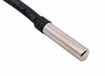

Dallas thermometer© 2018, ProtoIt Platform: ARDUINO |  |
Beschrijving:
Een Dallas-termomether is een temperatuursensor van het type one-wire. Vergeet geen 4,7K weerstand tussen de one-wire pin en de 5 volt aan te sluiten.
Onderdelen:
Dallas Thermometer
Instellingen:
| Pin | Arduino-pin waarop de temperatuursensor is aangesloten. |
| Sensornummer | Dit is het one-wire identificatienummer van de temperatuursensor. |
| Koud (°C) | Het signaal Koud wordt uitgezonden bij een temperatuur lager dan hier ingesteld. Standaard op 15 °C ingesteld. |
| Warm (°C) | Het signaal Warm wordt uitgezonden bij een temperatuur lager dan hier ingesteld. Standaard op 35 °C ingesteld. |
| Temperatuur (°C) | De gemeten temperatuur in graden Celius. |
| Temperatuur (°F) | De gemeten temperatuur in graden Fahrenheit. |
| Temperatuur (K) | De gemeten temperatuur in Kelvin. |
| Vorst | Dit signaal wordt uitgezonden bij temperaturen lager dan 0 °C. |
| Koud | Dit signaal wordt uitgezonden als de temperatuur lager is dan het niveau van de Instellingen. |
| Normaal | Dit signaal wordt uitgezonden als de temperatuur zich tussen Koud en Warm bevindt. |
| Warm | Dit signaal wordt uitgezonden als de temperatuur hoger is dan het niveau van de Instellingen. |